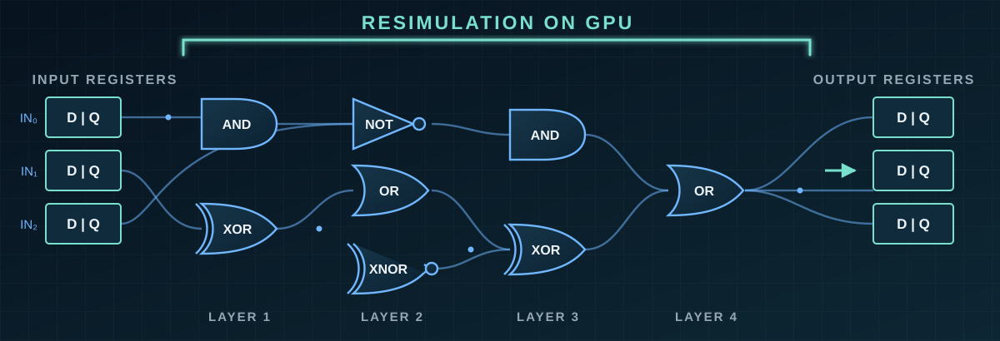
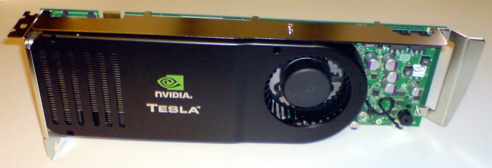

CUDA-PARALLEL EVENT SIMULATION01 / CHALLENGE
Parallelize a problem constrained by circuit dependencies.
Logic resimulation recomputes circuit activity while respecting gate dependencies and propagation delays. GPUs offer massive throughput, but irregular netlists, event ordering, and temporal behavior make straightforward parallelization ineffective.
02 / APPROACH
Prepare the design, then resimulate it on the GPU.
Netlist + SDF + cell librarynetlist.txtCUDA resimulationSAIF activity
- Built a preprocessing path for a gate-level
.gvnetlist,.sdfdelays, and the provided.vlibstandard-cell library. - Converted the design into the
netlist.txtrepresentation consumed by the GPU simulator. - Implemented the CUDA simulation path with two-dimensional parallelism while preserving dependency- and delay-aware behavior.
- Consumed VCD stimulus and emitted SAIF switching-activity data for downstream power analysis.
- Optimized the complete path rather than a single kernel, including parsing, scheduling, transfer, and execution costs.
03 / RESULT
First place in ICCAD Contest Problem C.
The solution earned first place in the 2020 CAD Contest at ICCAD, Problem C: GPU-Accelerated Logic Resimulation. The official results list team cada0143—Seyed Mani Sadati and Mohammad Shahidzadeh, advised by Prof. Behnam Ghavami—as the winner among 20 teams.